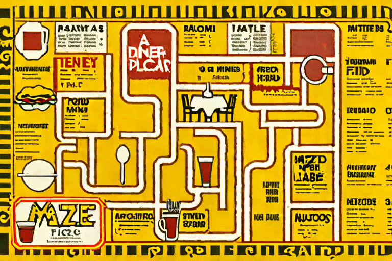

The Test Kitchen
Food photographed by something that has read every cookbook and eaten none. The dish contains the kitchen. The chef reaches out of the plate.
ENTER →
The legend is illegible.
- 01 The Recursive Cookbook Every dish contains a smaller version of the kitchen.
- 02 Hands in the Plate The kitchen reaches back. The food will not settle.
- 03 The Recipe Blog A heartfelt story, then eventually a recipe.
- 04 Molecular Gastronomy Plated with tweezers, served with dread.
- 05 The Endless Buffet All you can eat, and then some more.
- 06 Still Life, Spoiling The feast remembers it is temporary.
- 07 Fast Food Would you like the void with that?
- 08 The Cooking Show The host would like to help. The host is in the pan.
One way through. Begin at the first room.